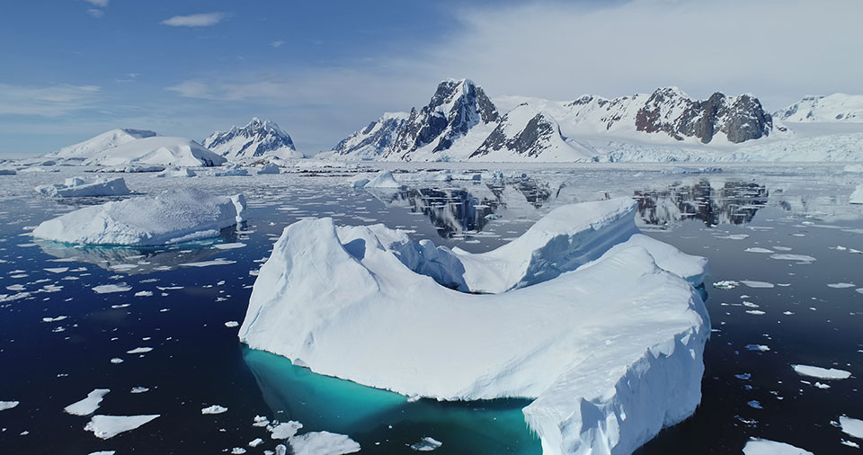
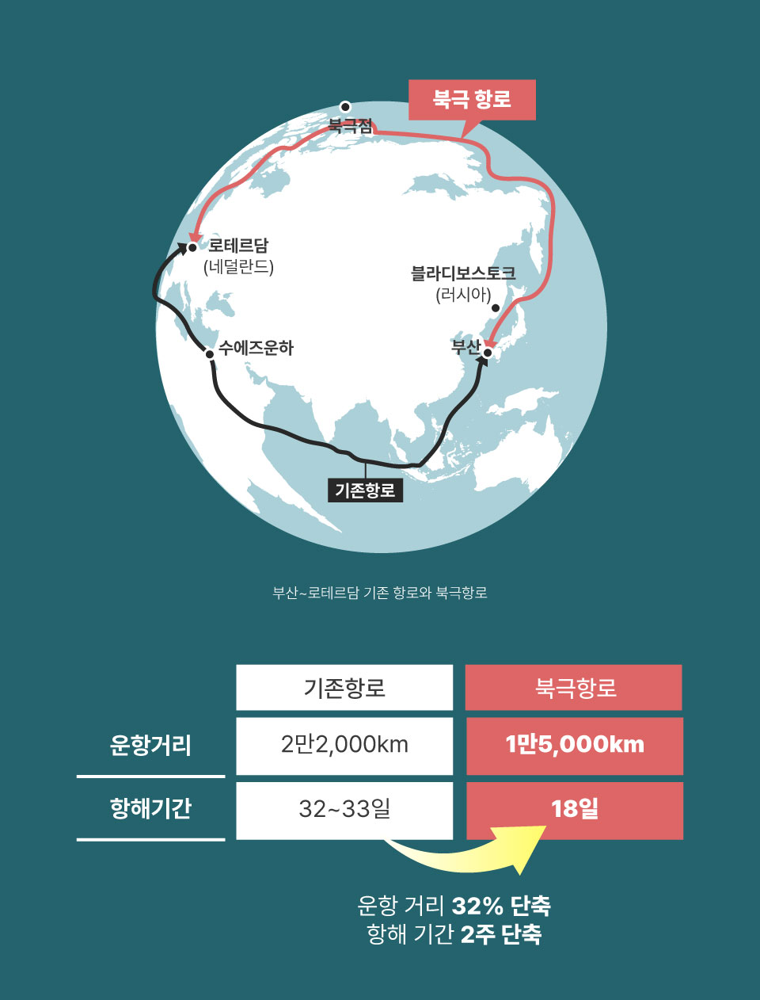
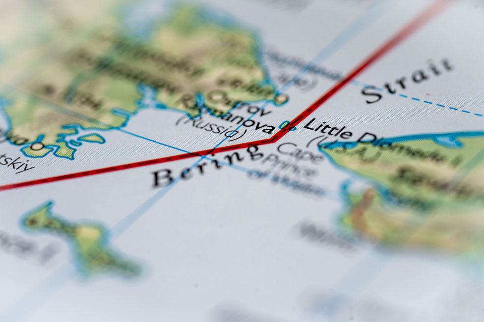
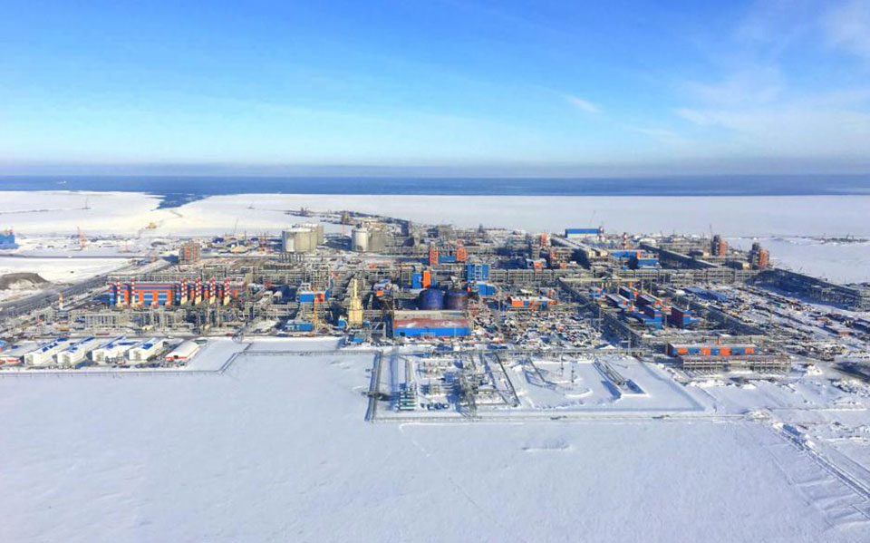
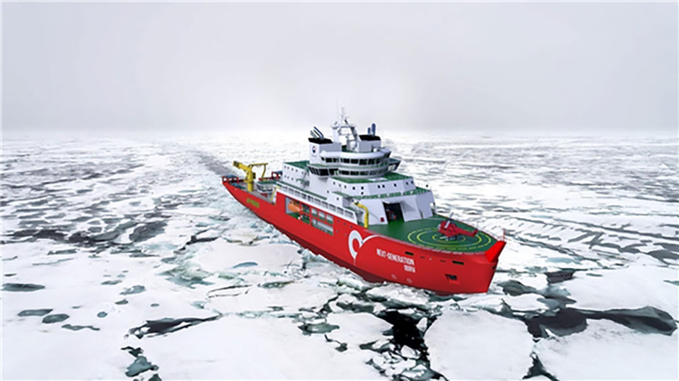

기후변화는 오늘날 인류가 직면한 가장 중대한 위기 중 하나다. 북극은
전 세계 평균보다 약 네 배 빠른 속도로 온난화가 진행되고 있으며, 그
결과 여름철 북극의 해빙 면적이 지속적으로 줄어들고 있다. 북극의
해빙 면적은 보통 9월에 최저치를 기록하는데, 1980년대만 하더라도
평균 700만㎢였던 것이 2010년대에는 450만㎢로 줄어들었다. 미국
국립빙설데이터센터(NSIDC: National Snow and Ice Data Center)에
따르면 2024년 9월에는 428만㎢를 기록했는데, 이는 46년간의 위성
관측 기록에서 역대 일곱 번째로 작은 수치였다. 2025년 9월 역시 예비
관측치에 따르면 약 460만㎢ 수준으로 나타나, 장기적 감소 추세가
이어지고 있다.
이 같은 변화는 인류에게 이중적인 의미를 갖는다. 한편으로는
기후변화로 인해 인류의 생존이 다양한 측면에서 위협받고 있지만,
다른 한편으로는
북극항로의 이용 가능 일수가 길어지고, 석유나 가스, 광물과 같은
북극의 자원에 대한 접근성도 확대되면서 북극이 기존 지정학적
판도를 바꿀 수 있는 핵심지역으로 전환되고 있는 것이다. 기후변화의 ‘역설적 혜택’이 바로 북극항로의
개방이라고 할 수 있다.

기후변화로 녹아내리는 북극의 빙하북극을 둘러싼 지정학적 경쟁의 심화
북극항로가 활성화될수록 이 지역의 지정학적 가치는 높아질 수밖에 없다. 유럽과 아시아의 거리를 대폭 줄일 수 있기 때문이다. 예를 들어, 부산항에서 유럽 최대의 무역항이라 꼽히는 네덜란드의 로테르담까지 북극항로로 운항하면 현재 수에즈 운하를 통과하는 노선(약 2만2,000km)보다 거리가 약 32%가량 줄어들어 약 1만5,000km로 단축된다. 이렇다 보니 북극 지역에서 가장 긴 연안을 보유한 러시아는 물론, 글로벌 초강대국인 미국과 글로벌 패권의 도전자인 중국도 북극 전략에 박차를 가하고 있다.

부동항에 목말라 왔던 러시아는 북극해항로(NSR: Northern Sea
Route)를 자국의 지정학적·지경학적 레버리지를 강화하는 수단으로
적극 활용하려 한다. 미국은 알래스카를 기반으로 북극에서의 존재감을
강화하고 있으며, 항행의 자유(FONOPs: Freedom of Navigation
Operations)를 옹호하며 북극해 중앙의 공해(High Seas of the Central
Arctic Ocean)가 국제수역이라는 입장을 견지하고 있다. 중국은
‘근(近) 북극 국가’임을 선언하며 러시아 북극 지역의 LNG 프로젝트에
참여하고 있으며, ‘빙상 실크로드(Polar Silk Road)’를 추진 중이다.
이처럼 미·중·러 간 전략적 경쟁이 격화되는 가운데, 북극항로의
특정 해역이나 초크 포인트 1) 에서 긴장이
고조될 가능성도 커지고 있다.
특히 베링해협이나 노르웨이-러시아 접경 해역 등은 병목 현상이
발생할 수 있는 지점으로, 국제 갈등의 불씨가 될 소지가 있다.

아시아와 북아메리카 사이에 있는 베링해협. 아시아 측은 러시아령, 북아메리카 측은 미국령이다. 바다를 기준으로는 베링 해와 북극해 사이의 해협이다.불투명한 상업적 활용 전망
그럼에도 불구하고 북극항로와 북극 자원의 상업적 활용 가능성은 아직
불투명하다.
우선, 계절적·기후적 제약이 크다.
여름철 일정 기간만 항해가 가능하고, 빙괴와 폭풍 같은 위험 요소가
상존하기에 보험과 같은 비용 측면에서의 부담도 크다. 또한 화물을
싣고 내릴 항만이 거의 없다 보니 여러 항만을 기항하는 기존 항로에
비해 물류 효율과 상업적 이득도 떨어진다. 따라서 상업용
컨테이너선이 정기적으로 북극항로를 이용하기에는 여전히 위험 부담과
비용이 크다는 것이 대체적인 평가다. 향후 25년간 중앙 북극해(CAO:
Central Arctic Ocean)에서 가장 가능성이 큰 시나리오는 일부 계절적
운송과 관광에 국한된 제한적 활동이라는 전망이 현재로서는 지배적인
상황이다.
반면, 에너지 교역은 상대적으로 현실성이 있다.
이미 러시아는 야말 LNG 프로젝트 등을 통해 북극산 가스를 아시아와
유럽으로 수출하고 있으며, 노르웨이와 미국도 북극권 에너지 개발을
적극 추진하고 있다. 즉, 당분간 북극항로의 상업적 가치도 일반
무역보다는 에너지 자원 교역에 집중될 가능성이 크다고 하겠다.

러시아 야말 LNG 프로젝트 (출처: Alten)한편, 한국의 입장에서 북극항로를 둘러싼 가장 큰 외부 변수는 러시아와의 관계다. 러시아는 북극 지역에서 최장 길이의 연안 보유국이자, 북극해항로(NSR: Northern Sea Route)의 실질적 운영자다. 그러나 러시아-우크라이나 전쟁이 지속되는 한, 한국을 포함한 서방 국가들의 참여와 협력은 벽에 부딪힐 수밖에 없다. 따라서 전쟁의 향방에 따라 한국의 선택지가 크게 달라질 것이라고 볼 수 있다. 전쟁이 장기화할수록 한국은 러시아 주도의 북극항로 사업에 직접적으로 관여하기 어려운 구도에 봉착하게 된다. 반대로 전쟁이 종결되고 일정 수준의 협력이 가능해진다면, 한국은 LNG 수송선, 쇄빙선 건조, 항만 인프라 분야에서 강점을 발휘하여 러시아와의 협력에 물꼬를 틀 수도 있을 것이다.
알래스카 LNG 사업과 북극항로
알래스카는 미국의 북극 전략과 에너지 산업에서 핵심적인 위치를
차지한다. 트럼프 행정부 2기 출범 이후 미국은 알래스카의 LNG 자원을
상업화하기 위한 정책적 의지를 강화하고 있으며, 프로젝트의 경제성
논란에도 불구하고 동북아 시장을 겨냥한 수출 가능성을 재조명하고
있다. 알래스카 LNG 프로젝트는 알래스카 노스슬로프(North Slope)
지역에서 생산된 가스를 파이프라인으로 남부 해안까지 운송한 뒤
액화하여 아시아로 수출하는 대규모 사업이다. 이 사업은 경제성
논란이 끊이지 않고 있지만, 북극항로가 본격적으로 열릴 경우
아시아?유럽 간 해상 운송이 단축되면서 사업성이 재평가될 수도 있다.
특히 한국과 일본은 LNG 수입국으로서 알래스카 LNG의 주요 잠재
고객으로 거론된다.
한국의 입장에서 알래스카 LNG는 두 가지 함의를 갖는다.
첫째, 에너지 안보 차원에서 수입국 다변화를 통한 리스크 완화
효과다.
현재 한국은 카타르, 호주, 미국 걸프만 지역에 크게 의존하고 있는데,
알래스카 LNG가 본격화되면 새로운 수입원을 확보할 수 있다.
둘째, 한국 조선업체의 참여 기회다.
알래스카 LNG 프로젝트는 대형 LNG 운반선과 북극 해역 운항이 가능한
특수 선박이 필요하므로, 세계적 경쟁력을 가진 한국 조선업의 활약
무대가 될 수 있다. 따라서 한국은 알래스카 LNG를 단순한 가스
공급원이 아니라, 북극항로 시대의 전략적 산업 파트너십 기회로
인식할 필요가 있다.

차세대 쇄빙연구선 조감도 (출처: 해양수산부)
한국은 북극항로와 에너지 산업의 귀추를 주목하며 다음과 같은 몇
가지 전략적 방향을 준비해야 한다.
첫째, 우호국과의 보조를 맞추는 것이다.
미국, 일본, 유럽 등과 보조를 맞추면서 국제 규범, 특히 공해에서의
항행의 자유 원칙이 흔들리지 않도록 기여해야 한다. 무리한 단독
행동이나 과도한 러시아 접근은 한국의 외교적 입지를 좁힐 수 있다.
둘째, 산업적 기회에 집중해야 한다.
한국은 조선업에서 세계적인 경쟁력을 보유하고 있으며, 특히 LNG
운반선과 쇄빙선 분야에서 독보적인 입지를 점하고 있다. 여기에 철강,
기자재, 항만 인프라까지 포함해 산업 생태계 전체가 북극항로 활용의
수혜를 입을 수 있다.
셋째, 국내 인프라와의 연계를 강화해야 한다.
북극항로가 본격화되면 한국 내 환적·정비 거점으로
남동부권(부산?울산?광양)의 중요성이 높아질 것이다. 따라서 이 지역
항만과 물류망을 북극항로 시대에 맞게 준비하는 전략이 필요하다.
북극항로는 기후변화의 산물이자, 동시에 새로운 지정학적 경쟁의
무대다.
지금 당장은 불확실성이 크고 상업적 활용도 제한적이지만, 에너지
자원 교역과 조선·항만 산업에 있어 한국에게 분명한 기회가 존재한다.
다만 그 기회는 러시아-우크라이나 전쟁의 향방, 미·중·러 간 전략
경쟁, 국제 규범의 향후 변화 등 외부 요인에 크게 의존한다.
따라서 한국은 지나치게 공격적인 전략보다는 동맹과 보조를
맞추며, 동시에 자국 산업의 강점을 극대화할 수 있는 실리적·균형적
접근을 취해야 한다.
북극항로는 단순한 또 하나의 항해로가 아니라
한국의 에너지 안보와 산업 미래, 그리고 국제질서 속 한국의
위상을 시험할 무대가 될 것이다.